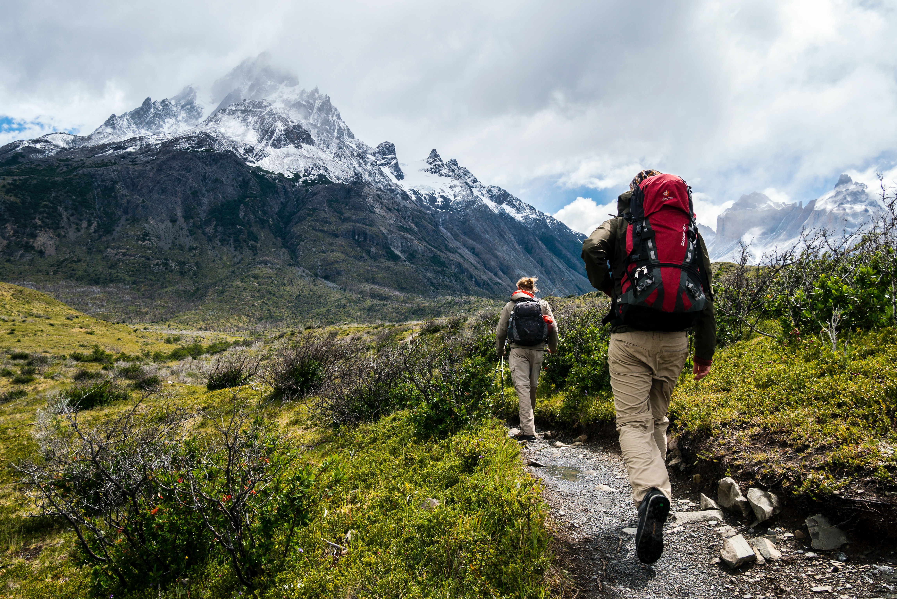
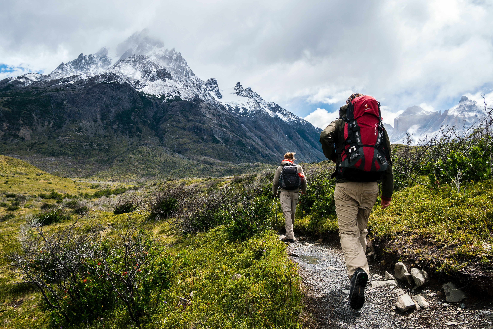

WALKS, HIKES & DRIVES
Around Dunagiri Retreat are several fascinating walks, treks and drives:
Mahavatar Babaji's cave: Dunagiri Retreat overlooks Mahavatar Babaji's cave, a 3 km trek through rural
landscapes and enchanted forests.
Vaishno Devi Temple: Dunagiri hill in the Himalayas is the secret shrine (gupt shakti peeth) of
Vaishnavi
Mata. An ancient temple, Dunagiri is where Bhairavi, the consort of Lord Shiva himself, turns into Vaishnavi
Mata to award liberation to Her devotee. 3 km walk from Dunagiri Retreat.
Pandhavkholi: A Himalayan meadow of medicinal herbs, this fascinating spot offers stunning views of
famous
Himalayan peaks such as Nanda Devi, Panchachuli, Trishul. 3 km trek from Dunagiri Retreat. through pristine
forests.
Sukhadevi Temple and Ashram: 15 minutes walk from Dunagiri Retreat is Sukahdevi temple, famous for
stupendous
360 degree views spanning 100s of kilometers.
Ancient Dwarahat Temples: An hour's drive from Dunagiri Retreat is the historic town of Dwarahat, also
known
as “Uttari Dwaraka” or North Dwaraka – ancient abode of Lord Krishna. The group of 55 richly carved temples
here were constructed between 10 to 12 centuries CE.
Gandhi Ashram Kausani: The small quaint town of Kausani, gifted with breathtaking views of snow clad
Himalayan
peaks, inspired Mahatma Gandhi to pen commentary on Bhagvad Gita. An hours drive from Dunagiri Retreat.
Almora, Ranikhet, Nainital: Within 2-4 hours drive from Dunagiri Retreat are the buzzing towns offering
a peak
into a colourful and vibrant India.
Walk thorugh natural growth forests: Dunagiri Retreat is located within an oak forest. Around us are
many
fascinating walks and trails with stunning views of snow peaks, giving a chance to observe wildlife and be one
with naure.
HISTORY,LEGENDS & MYTHS
Most Temples and holy places accrue higher respect the older they are. For instance the 3000 year old temple
of Kanyakumari may be deemed more potent than a 300 year old temple. At Dunagiri, it is not in years,
centuries nor even millennia that the antiquity is calculated in, but rather in terms of Yugas! A place where
mysticism abounds, Dunagiri vibrates with numerous stories, sacred legends and myths.
King Bharat: King Bharat, son of king Dushyanta and celestial Shakuntala, after whom India is named
“Bharatvarsh”, was born at Sukhadevi, a brief walk from Dunagiri Retreat.
Lord Hanuman and the Sanjeevani herb: Dunagiri is the home of mythical herb 'Sanjeevani' with life
giving
powers. In the epic Ramayana, Lord Hanumana comes to Dunagiri to fetch this herb to revive Lord Rama's brother
Lakshmana who lay unconscious in the battlefield.
Pandavas: a short distance from Dunagiri Retreat is the picturesque spot of Pandavkholi, where the five
Pandava brothers of the epic Mahabharata spent a portion of their anonymous exile . Now an ashram of himalayan
yogis.
Rishis and Yogis: Just like grass and shrubs growing near a sandalwood tree imbibe some of the
fragrance of
sandal, similarly every part of the mountains around Dunagiri Retreat, every leaf and every blade of grass is
imbued with the spiritual vibrations of the numerous realized souls who have meditated here. Sage Bharatmuni
renounced worldly life and came to the hills of Dunagiri to meditate in solitude, as did Dronacharya, Rishi
Garga and Sukhdeva Muni, son of Rishi Ved Vyasa. Shwetashwet Upanishad was composed at Dunagiri.
Mahavatar Babaji: Dunagiri is also known as the birthplace of modern day Kriya Yoga. It is at Dunagiri
in 1861
that the divine current of Kriya Yoga was revealed by Mahavatar Babaji to Shyamacharan Lahiri. As mentioned by
Swami Yogananda in 'An Autobiography of Yogi', the area of Dunagiri is still blessed by the living presence of
Babaji, the secluded master who has retained his physical form for centuries, perhaps for millenniums.


 
